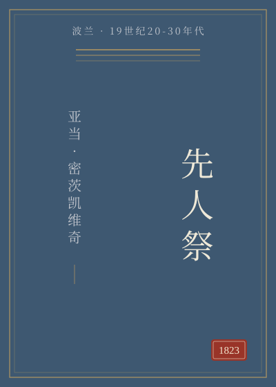
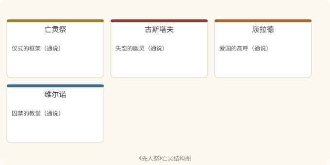

先人祭
一、基本信息
| 作者 | 亚当·密茨凯维奇 |
|---|---|
| 成书/出版 | 作者页注记：Britannica 语境（Dziady——成稿年代通说待核——第二/四部1823、第三部1832说） Adam Mickiewicz (Polish poet) — Encyclopaedia Britannica（百科全书） |
| 国别/地区 | 波兰 |
| 时代 | 近代 · 19世纪20-30年代 |
| 体裁 | 诗剧 |
| 语言 | 波兰语 |

《先人祭》亡灵结构图（主题·结构图）
二、创作背景
作者页注记：先人祭——'诗剧（Britannica 语境：Dziady——通说待核）'。
Britannica：密茨凯维奇——波兰民族诗人（作者页语境）。
题材（通说待核）：'先人祭'（亡灵节仪式）——古斯塔夫的 love 与'康拉德'的爱国。
三、内容脉络
（通说待核）乡村的亡灵祭仪式与鬼魂的诉说。
（通说待核）第三部：维尔诺囚禁与'康拉德'的自比。
四、主要人物表
| 人物 | 身份 | 说明 |
|---|---|---|
| 古斯塔夫/康拉德 | 转变的叙述者 | （通说待核） |
| 魔鬼/神甫 | 仪式人物 | （通说待核） |
五、主题与艺术特点
- 民间仪式与民族叙事（通说待核）。
- '爱'向'爱国'的转变（通说待核）。
- 沙俄统治下的波兰（B注记语境——通说待核）。
六、影响与评论
- Britannica：Dziady 列举（作者页注记）。
Adam Mickiewicz (Polish poet) — Encyclopaedia Britannica（百科全书） - Britannica：密茨凯维奇《塔杜施先生》为代表作（作者页交叉）。
Adam Mickiewicz (Polish poet) — Encyclopaedia Britannica（百科全书）
七、阅读建议
难点
- 四部结构（二/四/一/三）。
- 民间祭仪词汇。
- 《先人祭》中译本（人民文学等——通说待核）。
- 波兰文原版（公有领域）。
密茨凯维奇诗剧首选；与《塔杜施先生》对读。
八、待核实
- 四部结构与年份核对（通说）。
- 1968年波兰演出风波待核。
- '康拉德'细节待核。